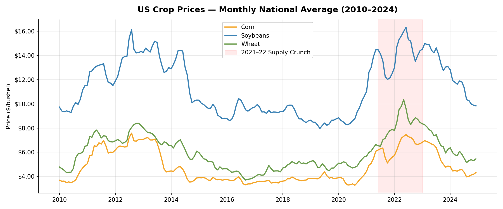
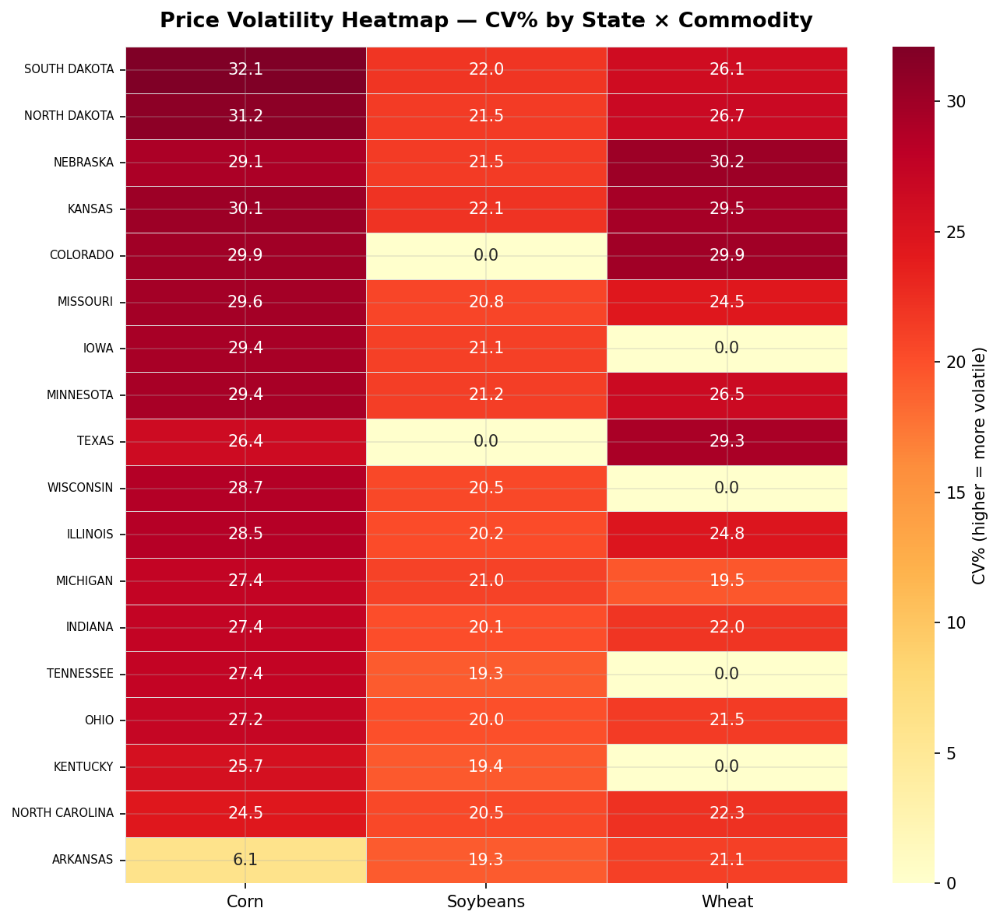
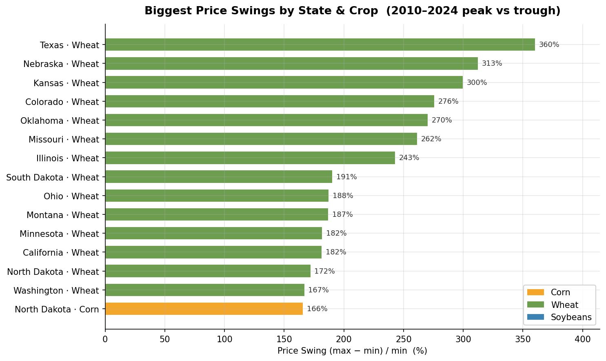
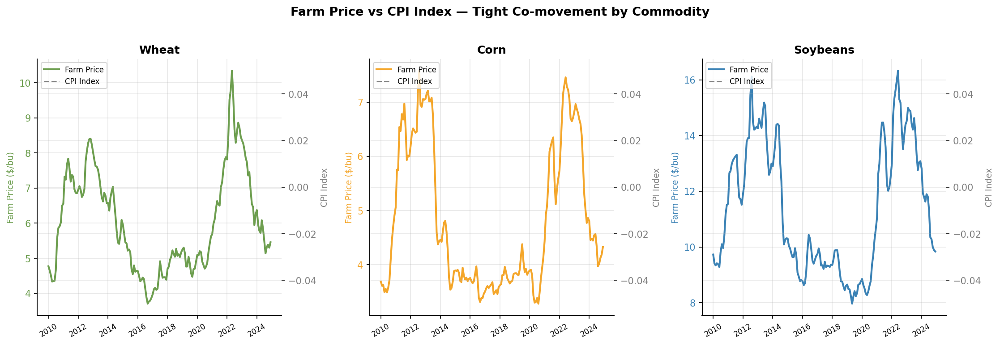
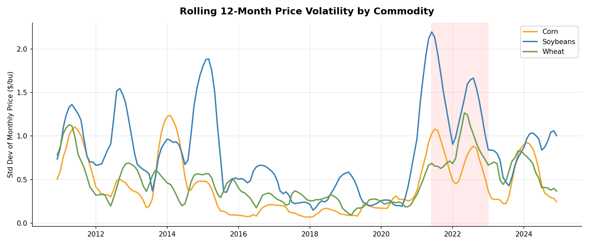
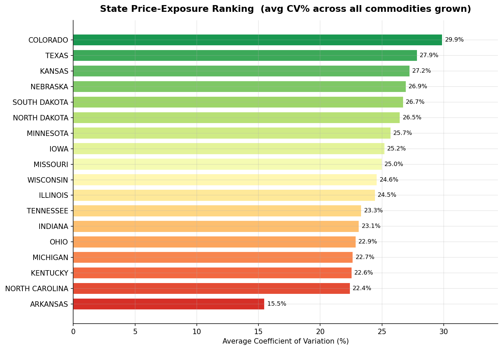
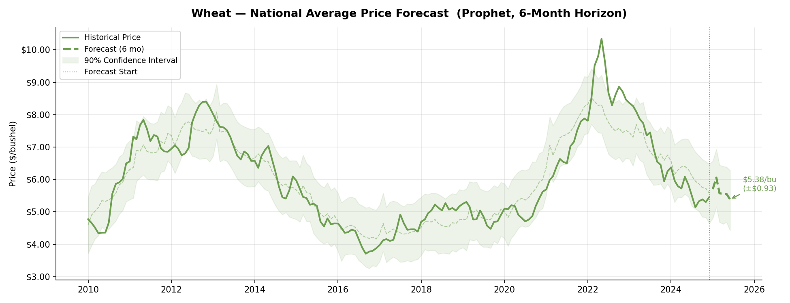
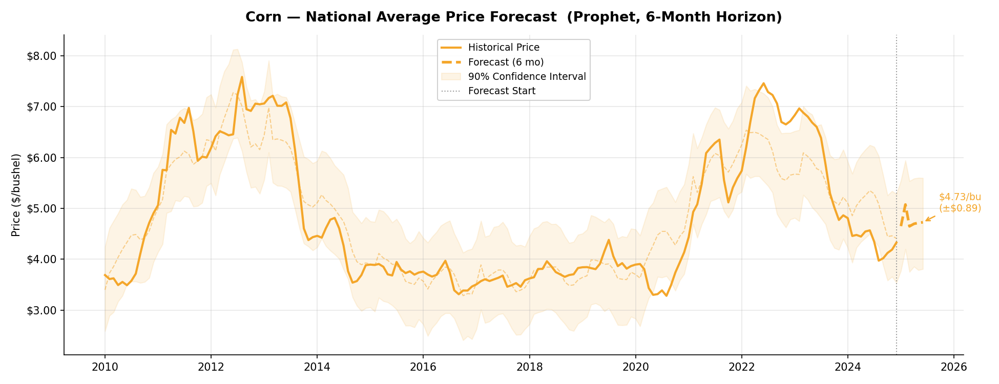
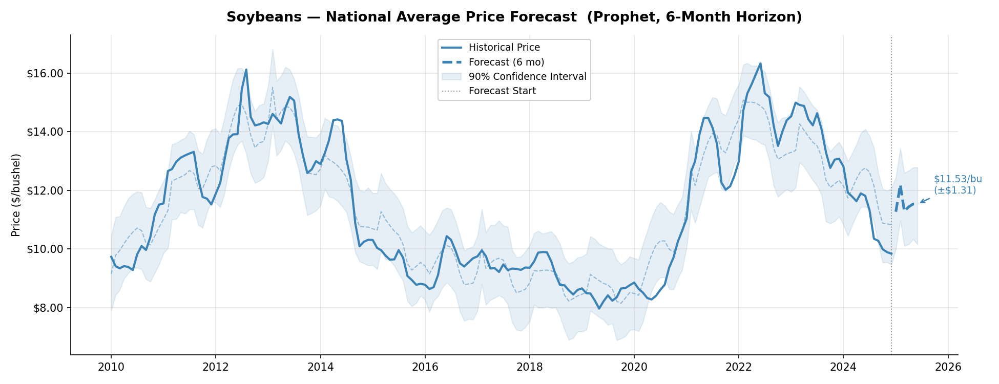

Business question: which US crops are most vulnerable to price volatility and supply disruptions — and can we predict price movement 3–6 months out? A full end-to-end analysis pipeline over 14 years of USDA farm-gate prices and FRED commodity CPI.
01_build_database.py — clean raw CSVs into a SQLite database.02_sql_analysis.py — SQL for volatility, state exposure, CPI correlation.03_eda.py — six exploratory charts (trends, heatmap, swings, CPI overlay).04_forecast.py — Prophet time-series forecast (6-month horizon).05_export_tableau.py — flat CSVs for the Tableau dashboard.The real Prophet model output — monthly farm-gate price (2010–2025) with a 90% confidence band and a 6-month forward forecast. Switch crops and hover any point.
Shaded area = 90% confidence interval · the highlighted tail is the 6-month forecast.
Generated directly by the pipeline. Click any chart to enlarge.








